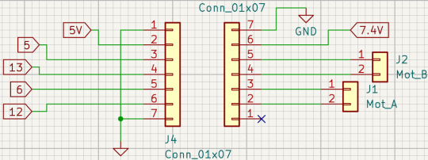
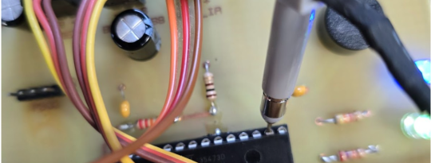
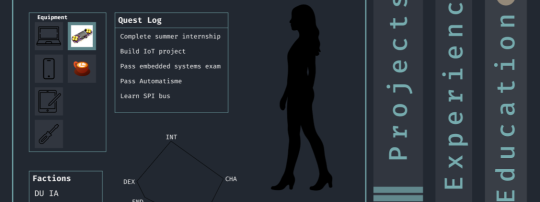

Génie Électrique Informatique Industrielle

Conception d’un système automatisé de chauffage MUGOCHAUD, basé sur un automate Siemens S7-1200. Le projet couvre le travail avec composants donneé, le câblage du coffret, la commande du système et sa vérification
Mes responsabilités ?

Création d'un shield pour un robot mini-sumo destiné à être monté sur une carte Arduino. Ce shield devra intégrer des capteurs permettant au robot de détecter l'adversaire, ainsi que les composants nécessaires pour le contrôle des roues L'objectif est d'assurer une programmation en autonomie, afin que le robot puisse participer à un combat de mini-sumo de manière indépendante
Mes responsabilités ?

Création d'un émetteur (contrôleur) qui permettra de contrôler les mouvements du kart à l'aide de curseurs pour régler la vitesse et la direction, et du récepteur placé sur le kart pour recevoir les commandes de l'émetteur et ajuster les roues en fonction des instructions de l'utilisateur
Mes responsabilités ?

Création d’un thermomètre de bain capable d’indiquer si l’eau est trop froide, correcte ou trop chaude grâce à un système de LEDs piloté par comparateurs analogiques. Le projet repose sur un capteur de température et une logique NOR permettant une indication visuelle simple de la température de l’eau
Mes responsabilités ?
Personnel

Création de mon site portfolio pouvant servir de CV. Vous y êtes en ce moment même. Découvrez!
Mes responsabilités ?

Création de Telegram bot (et page web) pour faciliter la navigation en group, ou je suis administrateur, pour les ancienne et nouveaux participants
Mes responsabilités ?
KhPI: Institut Polytechnique de Kharkiv